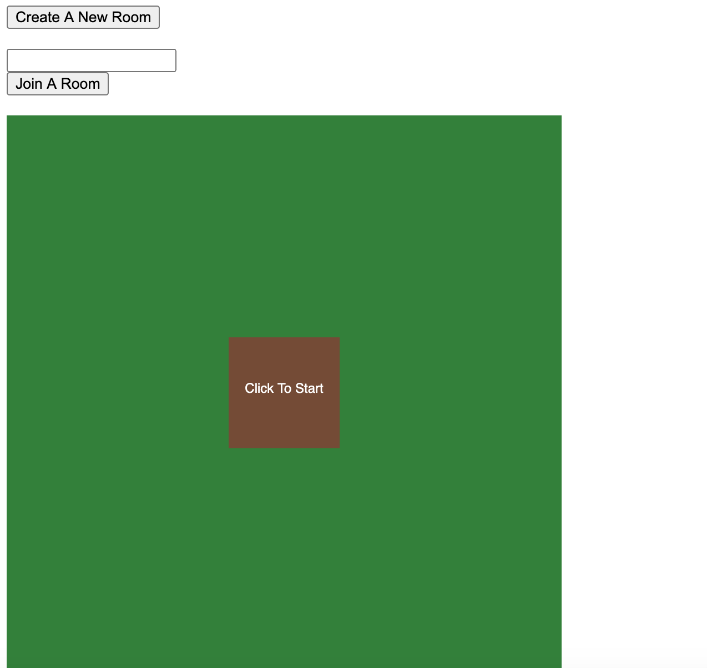
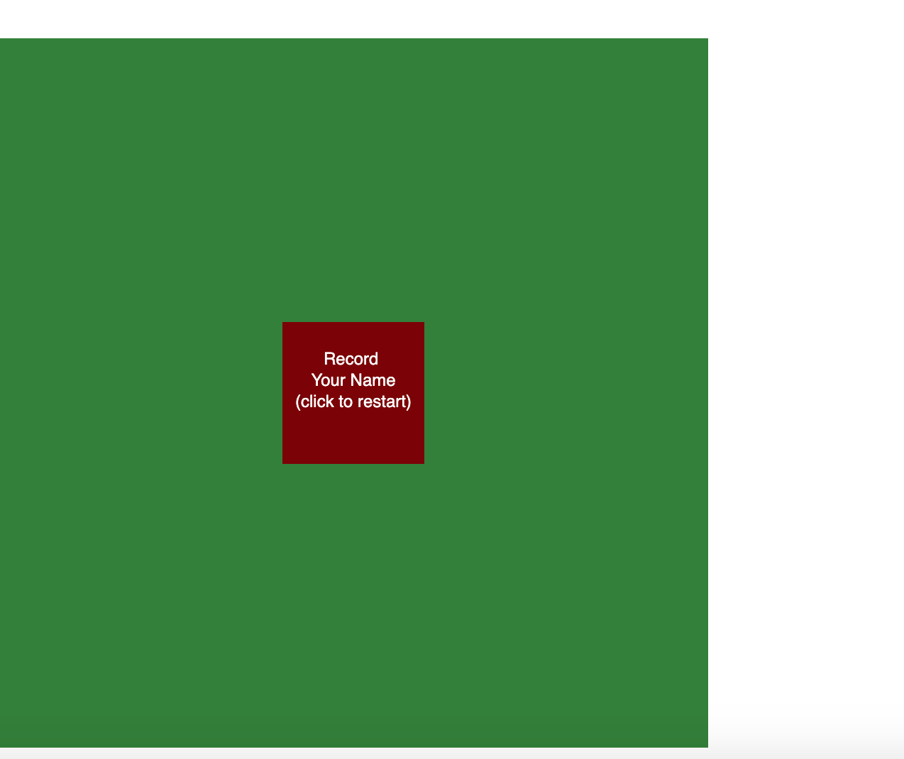
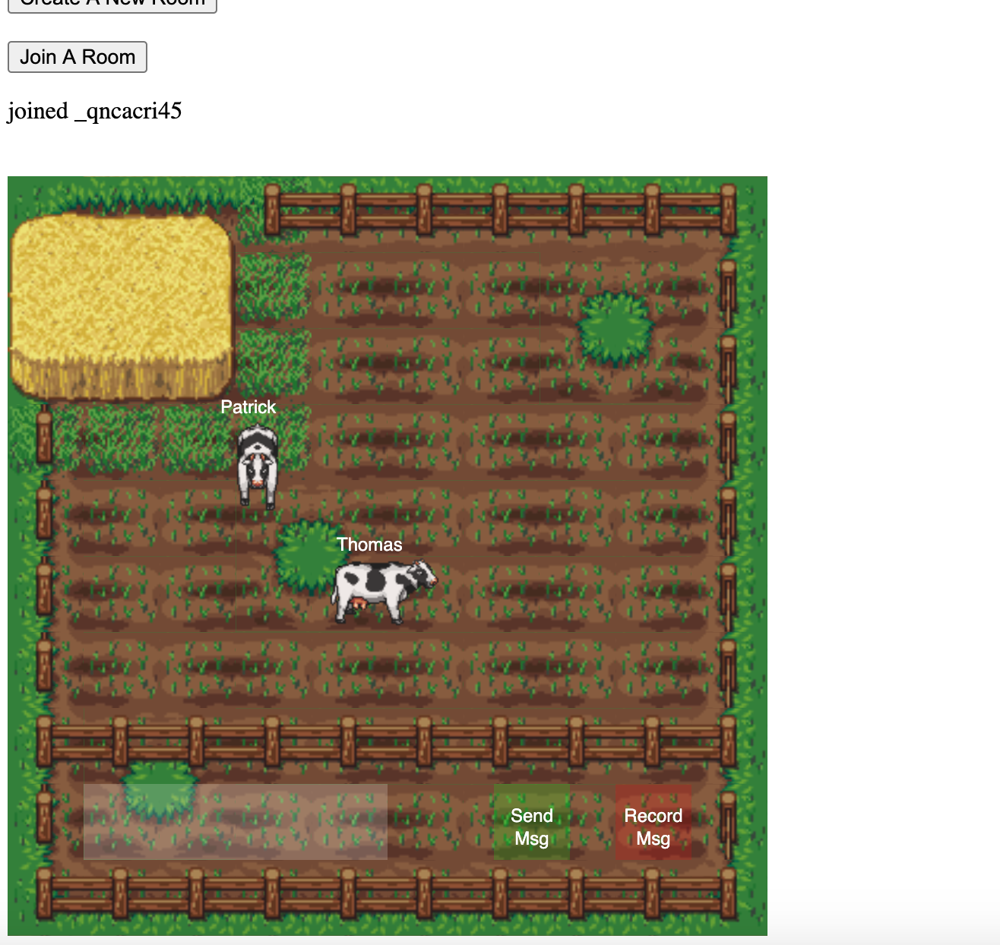
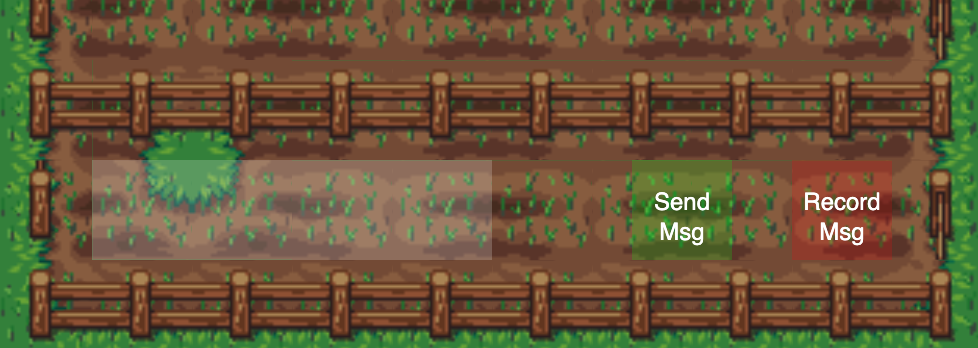

Moo Chat is a 2D chat application that allows users to enter rooms (farms) and chat with their friends.
The application uses speech to text for getting user message input and text to speech for presenting the sent message to other users in a room.
Cow chat uses web sockets (socket io) for “real time” movement of user avatars and “real time” messaging.
Technologies used are: Node.js, Express, Socket.io, P5.js, Vanilla Javascript
To start a user can either click the create room button or enter an already created rooms name into the “join room” input box.
If a user creates a room they must paste the rooms url into the “join room” input box and click the “join room” button to join a room.
A room must be joined before a user can start the application (the current implementation checks if the user has already joined a room -- if not clicking start does not start the game). Note: empty string is not a valid room name.

After the user has joined a room, the user can click the start button within the main application.
Clicking the start button prompts the user to say their name: this will be the username for the user within the room they are entering. Note: user’s must allow microphone input to be able to successfully use the application.

Once the user pauses, the name is registered and the user successfully joins the chat room.
Users can use the ‘w,a,s,d’ as movement controls. Use ‘w’ to move up, ‘s’ to move down, ‘d’ to move right and ‘a’ to move left.

To send a message users click on the “Record msg” button. This begins a recording, where the user can say their message.
Once the user finishes speaking, the recorded message will display in the “text box” on the lower left of the application.
Note: if the message is too only, only a preview will display in the text box but the full message will be sent to the group.

If the user is happy with their message, they can click “Send msg” to send the message to the group.
If the user is not happy with their message, they can click record, to record a different message -- and overwrite the current message.
The frontend implementation of moo chat uses the p5 library for the application’s canvas and vanilla js for the create and join room logic.
One notable highlight in the frontend is its extensive use of tile sheets. The background is built using multiple different tile sheets. Likewise, the cow animations come from a single tilesheet that is preloaded.
When the cow moves, it checks if an upcoming tile is a fence or stack of hay. If so it is prevented from moving through it.
The backend implementation of moo chat uses Node/Express to serve static files. It uses Socket.io (more or less Web Sockets) to create rooms, transmit real-time user data to all members of a room, and send messages between users.
I iterated on my implementation of the backend, first starting with an implementation of sending and receiving user location data, to sending and receiving user objects (adding deserialization of those objects) -- then adding logic for rooms.